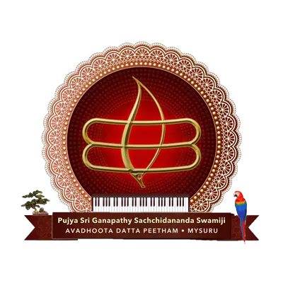
Temple Darshan
- Morning
- 6:00 AM – 12:00 PM
- Evening
- 4:00 PM – 8:00 PM

A serene spiritual destination in the tranquil city of Mysuru. How to reach the Ashram, when to come, where to stay and what to see nearby.
Persons of all faiths are welcome at Avadhoota Datta Peetham.

Avadhoota Datta Peetham, popularly called Sri Ganapathy Sachchidananda Ashram, stands on a sprawling 40-acre site at the foot of Chamundi Hill, in the royal city of Mysuru.
Upon arrival, visitors are enveloped in a serene and pure atmosphere, resonating with the soothing chants of Vedic hymns. Visitors are encouraged to join a guided tour through the Ashram to fully immerse themselves in its serene ambiance.
Temple darshan is open every day, morning and evening. All times are Indian Standard Time and can change on festival days, so check the official calendar before you travel.
Next ritual at the Karya Siddhi Hanuman temple: Abhisheka 7 AM · Aarti 6 PM

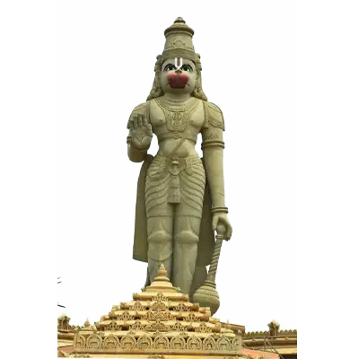
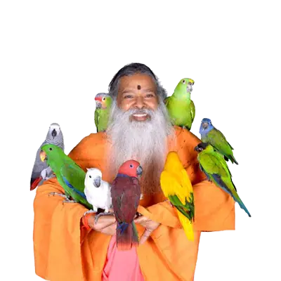
When in town, Sri Swamiji or Sri Balaswamiji performs the morning Sri Chakra Puja. Teertha (holy water) is offered afterwards.
Devotees gathered at the Universal Prayer Hall practise Datta Kriya Yoga, involving a Pranayama or a Mudra.
Participate in, and sponsor, rituals such as Sri Chakra Puja, Homa and Tailabhishekam.
Sri Balaswamiji gives daily lectures on the Yoga Vasistham in Kannada and Telugu.
Bhajans for at least one and a half hours, led by Sri Swamiji and by elder members of the Ashram.
When in town, Sri Swamiji gives darshana to devotees. On Sundays large numbers come from great distances to sing with Him.
Source: Ashram Life, dattapeetham.org
The Peetham recommends flying to Bengaluru for a first visit and travelling on to Mysuru by road. In Mysuru, the Ashram is a short ride from the railway station and the City Bus Stand.
For a first visit, the Peetham recommends flying to Bengaluru in Karnataka, directly or on a connecting flight from Mumbai, Delhi or Chennai.
Hire a taxi straight to Mysuru at the taxi desks in the airport arrival hall. Road travel from Bengaluru to Mysuru after 9 PM is not advised.
From the railway station or the City Bus Stand, take bus 119 or 119A, an auto rickshaw or a cab: about 15 to 30 minutes.
Sri Ganapathy Sachchidananda Ashram. The gates close at 11 PM, so if you arrive late at night, please stay in a hotel.
Approximate fares and times, as listed by the Peetham.
Readily available outside the railway station. The fare depends on the time of day and traffic conditions.
Through app-based services like Ola or Uber, or local taxi stands outside the railway station and bus stand.
KSRTC buses run from the Mysuru City Bus Stand, near the railway station. Look for buses towards Ooty Road / Nanjangud Road, or Ashram routes.
From the Mysuru City Bus Stand · about ₹10 – ₹20
Direct route to the Ashram, making it the most convenient option for devotees.
Also goes directly to the Ashram, but makes a few more stops along the way.
Passes near the Ashram. You may need to walk a short distance or take an auto rickshaw from the closest stop.
Source: Guidelines for Visitors, dattapeetham.org
Explore key locations, temples, facilities and attractions on an illustrative plan of the Mysuru Ashram. Choose a place on the map or from the list; the golden thread traces a darshan walk from Hanumadwaram through the shrines.
The grand welcome arch with Hanuman idols.
Visitors enter through the grand Hanumadwaram, a magnificently sculpted welcome arch with Hanuman idols. Just beyond it, an intricate carving of the infant form of Lord Dattatreya greets them.
Source: dattapeetham.org366 pillars, one for each birth date.
366 pillars stand on either side of a pathway in the Ashrama. Called the “Date of Birth Pillars”, each carries the deity and demigod for that particular day.
Source: dattapeetham.org
Daily congregational prayers before the main deity.
Daily congregational prayers are held here in the divine presence of Sri Swamiji. The hall houses the main deity of the Peetham, Kaalaagni Shamana Dattatreya, with the Sri Chakram Meru beside Him, and the Panchayatana Devasthana and the Sachchidanandeshwara Shivalaya on either side.
Source: dattapeetham.org
The Nava Durgas and the deities of the 18 Shakti Peethams.
Consecrated by Sri Swamiji on 28 December 2023, beside the Universal Prayer Hall. Around the Goddess are the Nava Durgas, miniature forms of the deities of the 18 Shakti Peethams, and a big Sri Chakra where devotees offer Kumkum Archana.
Source: dattapeetham.org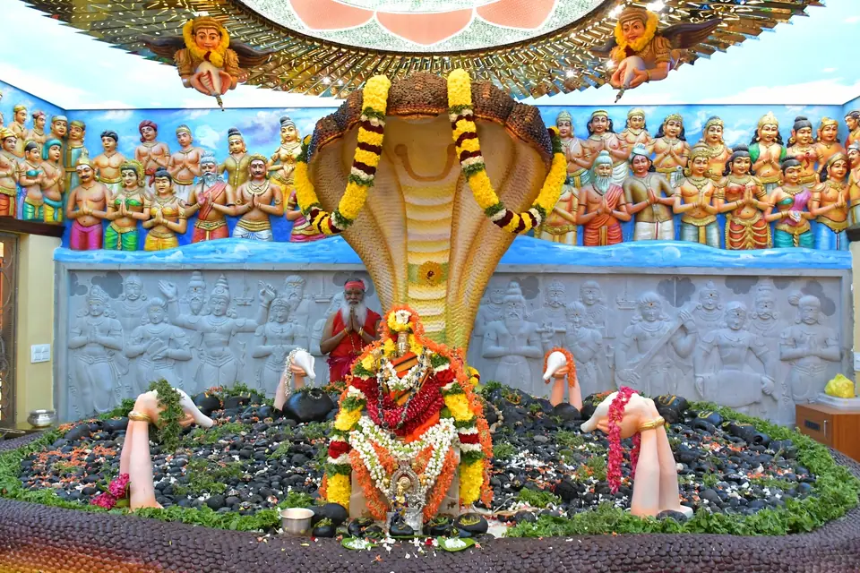
2,108 rare Salagramas as Ananthanaga Shayana.
To the immediate right of the Rajarajeshwari temple, it houses 2,108 rare Salagramas in the form of Ananthanaga Shayana, with the Trivikrama and Manoratha Kurma Salagramas weighing 300 kg. A Sudarshana Yantra conceived by Sri Swamiji crowns the Sannidhi.
Source: dattapeetham.orgLord Venkateshwara with Padmavati, Dhanvantari and more.
Devotees offer Pooja here to Sri Datta Venkateshwara Swamy, Goddess Padmavati, Dhanvantari, Sarva Doshahara Shiva, Sri Marakata Subrahmanya Swamy, Lord Karyasiddhi Hanuman and the Navagraha Devatas. Thousands come for Vaikuntha Ekadashi every year.
Source: dattapeetham.orgAs listed on the Sri Datta Venkateshwara Temple page.
The 70-ft monolith, tallest stone Hanuman in India.
Consecrated by Sri Swamiji in 2012, the 70-ft monolithic statue is the tallest stone statue of Hanuman in India. On weekends, 3D projection mapping is synchronised with the Hanuman Chalisa.
Source: dattapeetham.orgEight Bhairavas in a subterranean shrine.
Eight Bhairava idols, consecrated as per Shaiva Agama rites in the south-east corner of the Ashrama. The subterranean temple has a main shrine for the Pradhana Bhairava, with the other seven in niches around it.
Source: dattapeetham.orgA divine music auditorium, inaugurated by Sri Swamiji in 1998.
A purpose-built music auditorium shaped like a palm-leaf fan, its entrance facing east toward the Chamundi hills. It holds 22 sculpted Tamburas for the 22 Shrutis, 72 pillars for the 72 Melakarta ragas and the world’s first Sapta Swara Devata Mantapam.
Source: dattapeetham.org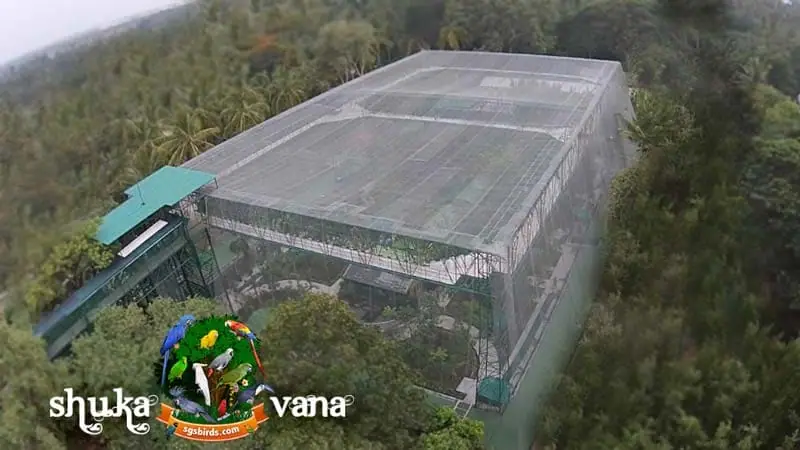
A free-flight aviary of 2,000+ birds from 486 species.
Founded by Sri Swamiji in 2012, with its own bird hospital. The free-flight walk-in aviary is home to more than 2,000 birds of 486 species, and holds a Guinness World Record for the most parrot species in a single aviary.
Source: dattapeetham.orgClosed on Wednesdays. Timings vary across official sources, and the Shuka Vana page says it is temporarily closed for maintenance; please check with the Ashram before visiting.
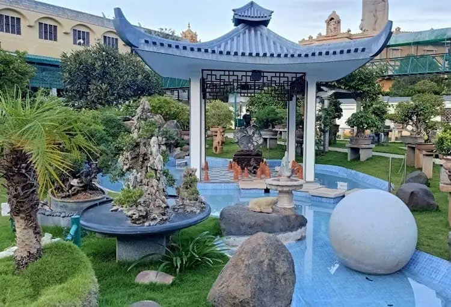
More than 450 miniature trees in an oriental garden.
More than 450 carefully shaped miniature trees in an oriental garden setting, nurtured by Sri Swamiji Himself. Moolikeswara, presiding deity of herbal healing, stands here among the Navagraha, Sapta Rishi, Nakshatra and Rashi gardens.
Source: dattapeetham.orgClosed on Wednesdays. Hours from the Bonsai Garden page. Timings vary across official sources; please check with the Ashram before visiting.
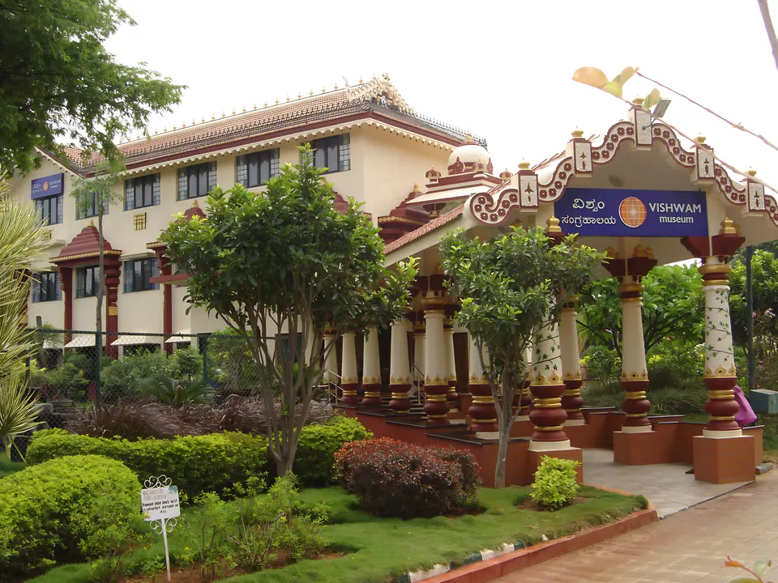
Rare gifts to Sri Swamiji from devotees worldwide.
“Vishwam” means “Universe”. The museum displays rare gifts Sri Swamiji received from devotees worldwide, from crystals and minerals to antiques, with His stamp collection (specimens from as far back as 1835) and musical instruments from over forty countries.
Source: dattapeetham.orgInaugurated in 2006, with the Vishwam Museum.
A sarovara (pond) in the Ashram grounds, inaugurated in 2006, the same year as the Vishwam Museum.
Free consultation and medicines at the polyclinic.
Outpatient services in Ayurveda, Allopathy, Homeopathy, Naturopathy and other systems of medicine, with free consultation, counselling and medicines at the Allopathy polyclinic. It attends to 5,000–10,000 people every month.
Source: dattapeetham.org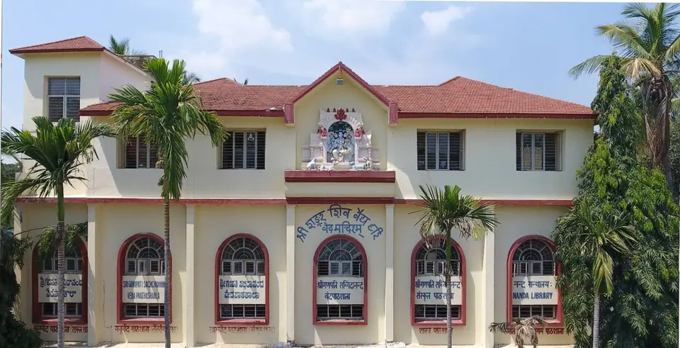
All four Vedas and Sanskrit, in the Gurukula way.
Classes in all four Vedas and in Sanskrit, in the traditional Gurukula system. Around 120 students are pursuing Vedic education here.
Source: dattapeetham.org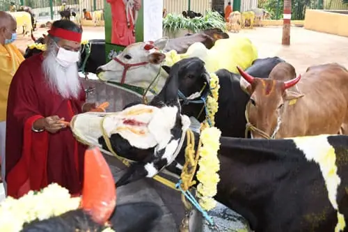
Care for more than 50 cows, and Gau Pooja.
Sri Swamiji has established a large Goshala at the Mysuru Ashram that shelters and cares for more than 50 cows. Devotees may offer Gau Pooja, worship of Gau Mata, here.
Facilities at the Ashram are limited and primarily maintained for the devotees of Sri Swamiji. These guidelines, from the Peetham, help every visit go smoothly.
Source: Guidelines for Visitors, dattapeetham.org
Persons of all faiths are welcome at Avadhoota Datta Peetham. However, facilities are limited and are primarily maintained to accommodate devotees of His Holiness Sri Sri Sri Ganapathy Sachchidananda Swamiji.
Visitors are therefore requested to obtain hotel accommodation in the city of Mysuru and visit the Ashram daily to attend its programmes and activities. See hotels near the Ashram.
Those seeking a brief stay on the Ashram premises should attend Ashram programmes consistently for at least a week or more before inquiring about staying. The Ashram Administrator handles such inquiries.
Even those known to the Ashram staff and to Sri Swamiji should ask permission in advance before making arrangements to visit and stay in the Ashram. Permission may be sought by letter, phone, fax or email to H. V. Prasad, personal secretary to Sri Swamiji, well ahead of your travel plans.
Once your plans are finalised, notify the Ashram of your arrival date, the number in your party and your expected duration of stay. Contact details.
Please carry photocopies of a Government-approved identity proof or passport, and passport photos, for every member of your family or group. Submit them to the Ashrama office on arrival: it is a government regulation.
First-time overseas travellers may find this helpful. It is best to begin travel preparations weeks or even months before your journey.
Your travel agent can provide the information you need for the journey, such as how to apply for a passport, the addresses and phone numbers of Indian Consulates, baggage allowances and weight limits. Their primary job is to provide your flight tickets; prices can vary dramatically depending on the airline you choose.
Wherever you depart from, fly to Bengaluru, in Karnataka, for your first visit. Your travel agent may arrange a connecting flight from Mumbai, Delhi or Chennai. Several airlines now fly directly to Bengaluru, including Lufthansa, Singapore Airlines, Malaysian Airlines, British Airways, Emirates and Gulf Air; arriving directly removes the hassle of staying in Mumbai or Delhi at night.
Allow ample time for connecting flights so that you can clear customs and change airlines. You may need to change from an international to a domestic airport, depending on your first city of entry.
In the arrival hall at Bengaluru airport there are several taxi stand desks where you can hire a taxi directly to Mysuru.
At Sri Ganapathy Sachchidananda Ashram, devotee etiquette is an integral part of the spiritual journey and community life: a holistic approach to spiritual living, emphasising reverence, devotion, service and community.
Show respect and reverence towards the Gurus, Sri Swamiji and Sri Balaswamiji, the Peethadhipati and the Uttaradhikaari of Avadhoota Datta Peetham, following their guidance and teachings with humility and sincerity.
Maintain reverence and decorum on entering the Ashram premises and sacred areas such as temples and meditation halls: observe silence, remove footwear and refrain from any behaviour that may disturb the peaceful atmosphere.
Take part in the daily rituals and activities, such as Sri Chakra Puja, Homa and Divya Naama Sankeertana (bhajan) sessions. Devotees may also sponsor these rituals as a form of devotion.
During Maha Shivaratri, Sri Swamiji’s Birthday celebrations, Navaratri and Datta Jayanti, join the processions, poojas, cultural performances and devotional singing with reverence and enthusiasm.
Adhere to the rules set by the Ashram administration, including codes of conduct, dress and behavioural norms that uphold the sanctity of the Ashram.
Devotees may offer selfless service within the Ashram community: temple maintenance, cooking, cleaning, or helping with social welfare programmes. Service is a form of devotion and an opportunity for spiritual growth.
Cultivate humility, compassion, patience and gratitude in daily life, reflecting the teachings and values of the Ashram’s spiritual tradition.
Respect all beings and treat everyone with kindness and compassion, regardless of differences in background, culture or beliefs.
The focus of interest for anyone should be the darshan and presence of Sri Swamiji and His teachings.
Source: Devotee Etiquette, dattapeetham.org
Facilities at the Ashram are limited, so visitors are requested to stay in a hotel in Mysuru and visit the Ashram daily to attend its programmes. The Peetham lists these hotels near the Ashram.
Hoping to stay on the Ashram premises? Attend the programmes for at least a week first, and ask permission well in advance. Read the guidelines.
| Hotel | Address | Per night | From Ashram |
|---|---|---|---|
| Hotel RoopaA budget-friendly hotel offering clean and comfortable rooms, a restaurant and basic amenities. | 2724/C, Bangalore-Nilgiri Road, Mysuru | ₹1,500 – ₹2,500 | ~5.5 km |
| Hotel AdityaAn economical hotel with well-maintained rooms, a restaurant, and close proximity to major attractions. | 1459, Narayana Shastri Road, Mysuru | ₹1,000 – ₹2,000 | ~4.8 km |
| The Dawn HotelA budget hotel offering basic accommodation, a restaurant, and easy access to the Ashram and other sites. | No. 15, Kuvempu Nagar, 3rd Stage, Mysuru | ₹1,200 – ₹2,200 | ~2.5 km |
| Aishwarya ResidencyBudget accommodation with essential facilities and services. | 2932/A, Off Bangalore-Nilgiri Road, Lashkar Mohalla, Mysuru | ₹1,000 – ₹1,800 | ~5.8 km |
| Hotel KVC InternationalAn affordable hotel with comfortable rooms, a restaurant and basic amenities. | 1294/B, Jhansi Lakshmibai Road, Chamarajapuram, Mysuru | ₹1,500 – ₹2,500 | ~4.7 km |
| Hotel Royale HeritageA budget hotel providing simple accommodation, a restaurant and basic services. | 1976, Chittaranjan Palace, Near Hardinge Circle, Mysuru | ₹1,000 – ₹2,000 | ~5.3 km |
Prices, distances and descriptions are as listed by the Peetham; distances are approximate and vary with the route taken. Book in advance and confirm the distance and amenities with the hotel.
Notable places to visit near Sri Ganapathy Sachchidananda Ashram, suggested by the Peetham, with approximate distances from the Ashram.
Life-size wax statues depicting musicians and various musical instruments.
A former royal palace that now houses an art gallery with a vast collection of artefacts, paintings and sculptures.
The historical palace and royal residence of the Wadiyar dynasty, known for its architectural grandeur and rich history.
A majestic cathedral built in neo-gothic style, known for its beautiful architecture and stained glass windows.
The history of Indian Railways, with exhibits of vintage locomotives and carriages.
A scenic lake with a park, butterfly park and aviary, ideal for leisurely walks and bird watching.
One of the oldest and most well-maintained zoos in India, housing a wide variety of animal species.
A serene lake popular for morning walks, jogging and bird watching, surrounded by lush greenery.
A famous hill with a temple dedicated to Goddess Chamundeshwari, one of the Ashtadasha Shaktipeethas, with panoramic views of Mysuru city.
A bird sanctuary on the banks of the Kaveri, known for its diverse bird species and boat rides.
A historical town near Mysuru, including the Ranganathaswamy Temple and Tipu Sultan’s Summer Palace.
A beautifully landscaped garden adjoining the Krishnarajasagara Dam, known for its musical fountain show.
An impressive dam across the river Kaveri, with scenic views and the Brindavan Gardens nearby.
Known as “Dakshina Kashi”, famous for the Nanjundeshwara Temple dedicated to Lord Shiva.
A historical site on the banks of the Kaveri, known for its sand dunes and ancient temples.
A wildlife reserve known for its tiger population, safaris and rich biodiversity.
Stunning twin waterfalls on the Kaveri: Gaganachukki and Bharachukki.
A hill range known for its scenic beauty, wildlife sanctuary and the Ranganathaswamy Temple.
Inside the AshramExplore Shuka Vana, the Kishkindha Moolika Bonsai Garden, Vishwam Museum and Nada Mantapa, within the Ashram grounds.
Ashram attractionsDistances are approximate and can vary with the exact route taken.
Seek permission for a stay well in advance, and once your plans are final, let the Ashram know your arrival date, the number in your party and how long you will stay.
Please use the Contact page for personal requests and messages to the Ashrama, and Feedback / Support for website or app issues.
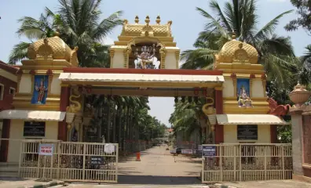
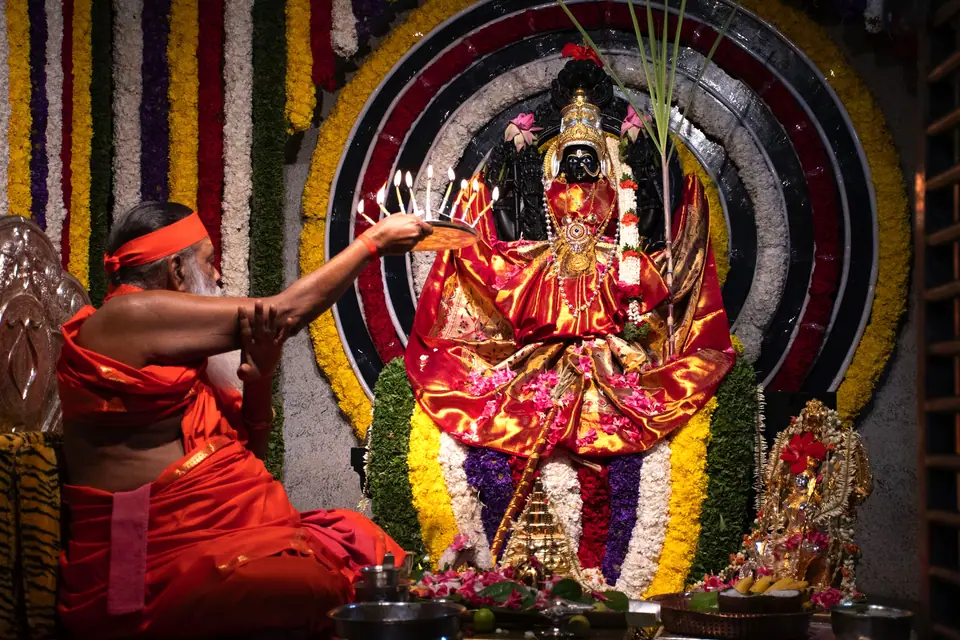
Temple darshan is open every day, 6 AM – 12 PM · 4 PM – 8 PM. Check the calendar for festival programmes before you travel, or book a puja online.